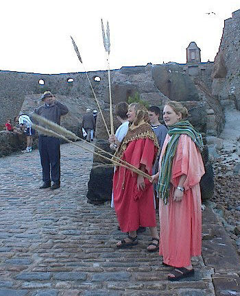

Et quand i' lus appréchaient d'Jérusalem, dé Beth-phagé et d'Béthannie, sus l'Mont ès Olivièrs, il envyit deux d'ses discipl'yes, et i' lus dit, "Allez dans la p'tite ville endrait et quand ous y veindrez, ou vèrrez un ânichon auve eune corde lé tou d'san co tchi n'a janmais porté d'houmme. Lâtchiz-lé, et r'veindrez acanté li. Et si autchun vos dit, 'Pouortchi qu'ou faites chenna?' dites: 'Lé Seigneu en est d'mêtchi et l'envèrra dêliêment.'"
Et i' lus en fûdrent et vîdrent un ânichon du bord d'l'us à la carre d'la rue, et i' l'lâtchîdrent. Et tchiqu's'uns tchi 'taient là lus dîdrent, "Tch'est qu'ou faites en prannant l'ânichon?" Et i' lus rêponnîdrent coumme Jésû l'lus avait dit, et i' les laîssîdrent aller.
Et il' am'nîdrent l'ânichon à Jésû, mîndrent d'lus habits sus san dos et i' l'êtchèrfroutchit.
Y'avait un tas d'monde tchi mîndrent bas lus habits sus san c'mîn, et d'autres tchi mîndrent bas des branques tch'il' avaient prîns dans les clios. Et les v'là les cheins en d'vant et les cheins en driéthe tchi briyaient, "Glouaithe! Bénîn sait l'chein tchi veint au nom du Seigneu! Bénîn sait l'rouoyaume à v'nîn d'not' péthe Dâvi! Glouaithe ès pus hauts lieux!"
Et il entrit dans Jérusalem, dans l'Templ'ye, et quand il avait dgetté tout à l'entou, lé sé i' r'allit hors à Bethannie acanté la Douzaine.
Coumme il appréchaient d'Jéthusalem et qu'i' 'taient auprès d'Bethphagé et Béthannie auprès du Mont ès Olivièrs, il envyit deux d'ses discipl'yes et lus dit, "All'-ouos-en dans la contrée tch'est endrait nous et mais qu'ous y'entréthêtes, ou trouv'thez un ânon amathé sus tchi autchun n'a janmais monté d'sus. D'samathez-lé et am'nez-lé. Et si tchitch'un vos dit, 'Pouortchi qu'ou faites chenna?' ou dithez qu'lé Seigneu en a bésouain et l'renv'yêtha d'siette."
I' lus en fûdrent don et trouvîdrent l'âne amathée en d'houors auprès d'la porte entré deux c'mîns, et i' la d'samathîdrent. Et tchiqu's'uns des cheins tchi 'taient là lus dîdrent, "Pouortchi qu'ou d'samathez ch't' âne-là?"
Mais i' lus rêponnîdrent coumme Jésû lus avait c'mandé et i' les lâtchidrent aller. Il am'nîdrent don l'ânon à Jésû et mîndrent lus hardes dessus et i' s'assiévit d'ssus. Et un fliotchet d'monde êtalvachaient lus hardes dans lé c'mîn et d'aut's copaient des branques dé bouais et les fliantchaient l'long du c'mîn. Et les cheins tch'allaient d'vant et les cheins tchi siévaient briyaient et dîthaient, "Hôsanna! Il est d'mêtchi d'béni l'chein tchi veint au nom du Seigneu! Il est d'mêtchi d'béni l'pays d'Dâvi not' péthe dé tchi l'rouai veint au nom du Seigneu! Hôsanna ès pus hautes pièches!"
Et Jésû entrit dans Jéthusalem et dans l'Templ'ye et quand il eut r'gardé à l'entou d'li et qu'i' 'tait dêjà tard, i' sortit pouor r'aller à Béthannie auve la Douzaine.
Et quand i' vîndrent auprès d'Béthphagé et Béthannie à l'entou d'Jéthusalem aupi du Mont ès Olivièrs, Jésû c'mandit à deux d'ses approtis d'aller l'avant à ieux. I' dit, "Allez dans l'vaîthinné endrait vous et un co qu'ous y'entréthez, ou trouv'thez un poulain amathé qu'fis d'âme n'a janmais êtchèrfroutchi. D'samathez-lé et m'nez-lé ichîn! Si autcheune pèrsonne vos d'mande, 'Tch'est qu'ous êtes à faithe?' - dites-li, "Ch'est qu'lé Seigneu en est d'mêtchi, et tu l'r'éthas dêliêment.'"
I' lus en fûdrent don et trouvîdrent l'poulain amathé dans eune ûss'sie dans la rue. Et i' lé d'samathîdrent. Y'en avait des cheins mâtés là-l'tou tchi lus d'mandîdrent, "Tch'est qu'ous êtes à faithe qu'ou d'samathez chu poulain-là?"
Les deux approtis rêponnîdrent coumme Jésû lus avait dit, et nou lus allouit d'lus en aller. Il' am'nîdrent don l'poulain à Jésû, et êtrav'lîdrent lus habits sus l'dos d'la bête. Jésû y monta, et un tas d'monde mâtés au pouorportant du c'mîn êtrav'lîdrent d'lus habits par lé c'mîn et d'aut' monde copîdrent des branques fieillues ès fôssés et l's êtrueûlîdrent l'avant à li. Et par dévant et par driéthe lé monde briyaient, "Salut! Qu'lé chein tchi veint au nom du Seigneu sait bénîn! Qu'lé rouoyaume dé not' péthe Dâvi tch'est pouor v'nîn sait bénîn! Salut ès pus hauts cieux!"
Quand i' 'taient à lus appréchi d'Jéthusalem, à Bethphagé et Bethannie près du Mont ès Olivièrs, il envyit deux d'ses approtis, lus ayant dit, "All'-ouos-en dans l'village l'avant à vous et dêliêment comme ous y'entréthez, ou trouv'thez y'amathé un poulain qu'nou n'a janmais êtchèrfroutchi; d'samathez-lé et am'nez-lé. Si autchun vos dit, 'Pouortchi qu'ous êtes à faithe chennechîn?' dites raîque chennechîn, "Lé Seigneu en est d'mêtchi et l'renvyêtha ichîn dêliêment.'"
I' lus en fûdrent et trouvîdrent un poulain amathé auprès d'un us, en d'houors dans la rue. Comme i' 'taient à lé d'samather, tchiqu's'uns des gens là-l'tou lus dîdrent, "Tch'est qu'ous êtes à faithe, à d'samather chu poulain?"
I' lus racontîdrent chein qu'Jésû avait dit, et ieux, i' les laîssîdrent l'emm'ner.
Épis il am'nîdrent lé poulain à Jésû et lanchîdrent lus cliôques sus, et i' s'assiévit d'ssus. Un fliotchet d'monde êtrav'lîdrent lus cliôques sus lé c'mîn, et d's aut's parfénîdrent des branques fieillues qu'il' avaient copés dans les clios. Épis les cheins tch'allaient l'avant, et les cheins tchi siêthaient, briyaient:
"Sauve-nous! Qu'lé chein tchi veint au nom du Seigneu sait bénîn! Qu'lé rouoyaume d'not' anchêtre Dâvi tch'est pouor v'nîn sait bénîn! Sauve-nous dans les pus hauts cieux!"
Viyiz étout: